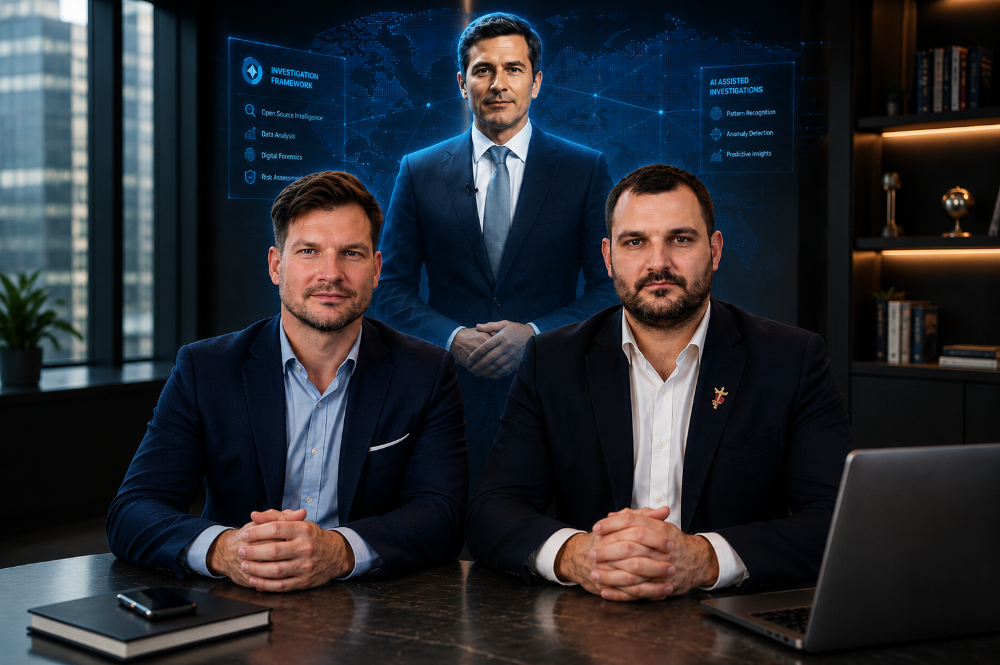
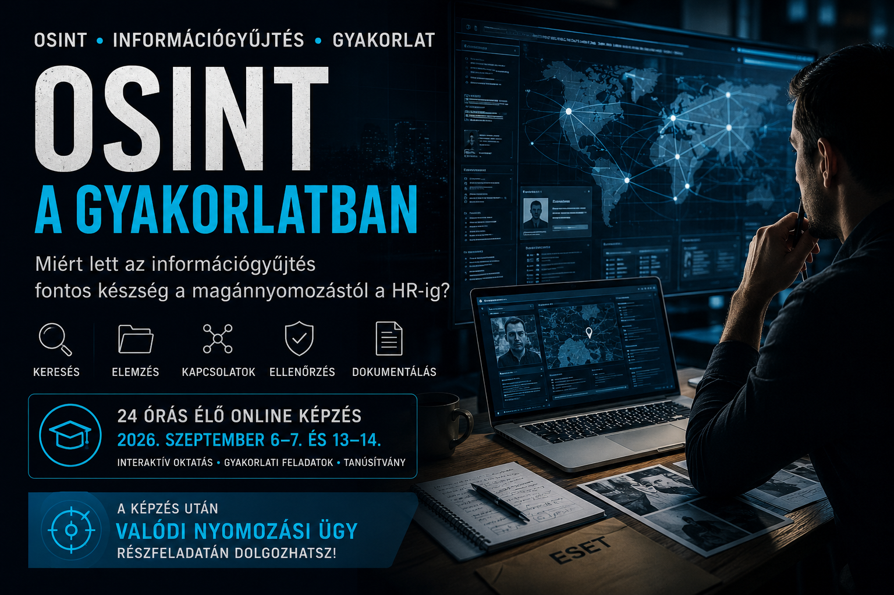

OSINT in Practice: Why Information Gathering Has Become an Essential Skill
How can OSINT support private investigation, HR, compliance, cybersecurity and better business decisions?
Read article →Practical European investigative training for universities, professional organisations, cybersecurity teams, compliance professionals and individual learners.
Created and presented by Dávid Komporday, based on the research and investigative expertise of Áron Tarkó.

Practical investigative training for companies and professionals who want to verify partners, reduce risk and make better-informed decisions.
The highest-value opportunities are academic and professional partnerships. Individual Udemy enrolment remains available for learners who want to start immediately.
Integrate European investigative methodologies into existing programmes, build an elective module or invite us for a guest lecture.
Explore Academic CollaborationOffer your members practical investigative training through webinars, licensing, bulk access or partnership campaigns.
Discuss Partnership OptionsStart with the full Udemy course and learn practical OSINT, HUMINT, verification, reporting, ethics and case-analysis methods.
View the CourseFor universities, lecturers and programme directors in criminology, security studies, intelligence analysis, journalism, law, compliance and cybersecurity education.
For cybersecurity communities, OSINT groups, compliance associations, corporate security networks, fraud prevention groups and professional training providers.
A complete Udemy-compatible learning structure: video lessons, quizzes, assignments, case studies, final reflection and optional mentoring pathways.
History, ethics, legal boundaries and the investigator’s mindset.
Open, human and technical sources; OSINT, HUMINT, verification and triangulation.
Digital tools, observation, documentation, analysis, reporting and presentation.
Corporate data leak, missing-person scenario and disinformation campaign analysis.
Trust, client management, GDPR, confidentiality, pricing, contracts and credibility.
Final review, certificate, reflection assignment and optional consultation pathways.
The project combines practical learning design, business development, academic research and specialist European investigative knowledge.

Dávid created and presents the Udemy course, adapting academic research into a practical, visual and accessible professional learning experience for European audiences.

Áron contributes the research and investigative expertise behind the methodology, with a focus on European information gathering, ethics and legal frameworks.
Short professional articles on OSINT, HUMINT, GDPR-conscious investigation, source verification and European investigative practice.

How can OSINT support private investigation, HR, compliance, cybersecurity and better business decisions?
Read article →
European open-source research requires legal awareness, language sensitivity and careful documentation.
Read article →
Professional investigators must treat privacy, proportionality and documentation as part of the workflow.
Read article →
Source assessment, verification and structured reporting are valuable far beyond private investigation.
Read article →The course is created and presented by Dávid Komporday. The academic content and investigative methodology are based on Áron Tarkó’s research and professional expertise.
No. It is designed for cybersecurity and infosecurity teams, compliance professionals, corporate investigators, educators, researchers, journalists, students and legal professionals.
Yes. It can be used as recommended learning, integrated into an existing module, developed into an elective or supported with guest lectures and workshops.
Yes. We can discuss member discounts, affiliate partnerships, bulk access, webinars, joint campaigns or speaking opportunities.
It combines academic foundations with practical workflows: OSINT, HUMINT, verification, observation, documentation, reporting, GDPR, ethics and European case studies.
Marek Marlow is an AI-supported educational persona used in selected course materials and video introductions. The course itself is created by Dávid and based on Áron’s research and expertise.
Use this form for university collaboration, guest lectures, professional organisation partnerships, corporate training, speaking opportunities or individual course questions.
We collect only the information you voluntarily submit through our forms.
This website and downloadable guide are provided for educational and informational purposes only.
 Free guide
Free guide
Download the complimentary investigative guide and explore practical European investigative methods.